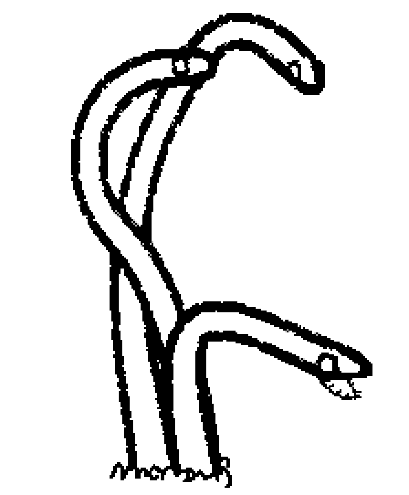

An adult's body is long and thick, extending from the ground as if plant. Juveniles however are very stubby, almost pill shaped if it weren't for their tails. Their final size depends greatly on their enviorment and resources, they could get very big or very small.
 They're only found in soft soils where dens could be built, though they've occasionally been spotted using cubbies in infrastructure as dens. They're found in clusters that highly differ in number and individuals' size.
For food, they mostly scavange and hunt small creatures such as bats, insects, though they occasionally ambush larger fauna using their frightning speed and flesh melting teeth. If a cluster of garbage worms is big enough it could theoretically murder a train lizard. The only creatures that aren't in danger of utter pulverization are vultures, being the only creatures strong enough to axe a garbage worm twine in one bite of their sharp maws.
They're mostly passive, attacking only when aggregated, they're also quite the curious fellers, to the point of being a nuisance to tool wielding creatures, plucking their items off of them to examine.
When the time comes, adults will hunt a large animal to release their gamates in, after spawning, they perish, their only living remnants are their eggs layed the fresh corpse, waiting for a creature to fall victim to the trap.
After mating, the resulting eggs lie dormant in the fresh corpse until it's ingested, the host could be any mobile carnivore, as long as its digestive system starts with an accomidating stomach cavity, where a small handful of them successfully hatch and latch onto the inner walls, they leech from the host's nutrients and eat their way out of the stomach, half of their body inside the stomach while the other half is out, they use the host's fat reserve as as if their own, adding and subtracting to their needs as they grow longer while simultaneously developing tendrils and veins, connecting them ever more to their host's systems. When the time is right, they burst out the host, forcefully scurry it to soft soil and borrow themselves and the host, the veins keep the host's blood oxiginated and fully conscious and the tendrils keep them fed. They use the stockpile of fat they've gathered as concealed larvae to grow untill they're big enough to hunt. The entirety of the lifetime of a garbage worm is spent bound to its host, if one dies so will the other, though that is if the host of an adult garbage worm can even be called alive, as most hosts succumb to neurological deterioration, losing tons of motor and mental function.
Because of their nature as parasites they are not on good terms with any other species, however, their pelt is sought after. and the rich manure they directly release into soil is of great help to flora.